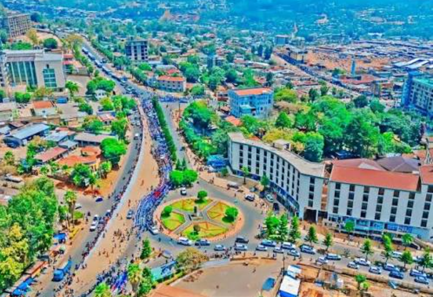

Green mountains, warm people
Wolaita is known for its culture, history, and stunning landscape. It is also known for its green mountains, fertile land, and welcoming people. The administrative center is Sodo.

The zone's namesake peak, with a view over every valley below.
📍 ~14 km east of Sodo
View on mapA quiet, well-known crossing between the highlands and valley towns.
📍 Badessa, Wolaita Zone
View on mapMonuments honoring the leaders who shaped the region's history.
📍 Sodo town center
View on mapA number of beautiful villages where the pace of life slows down.
📍 Surrounding Sodo, various distances
View on map